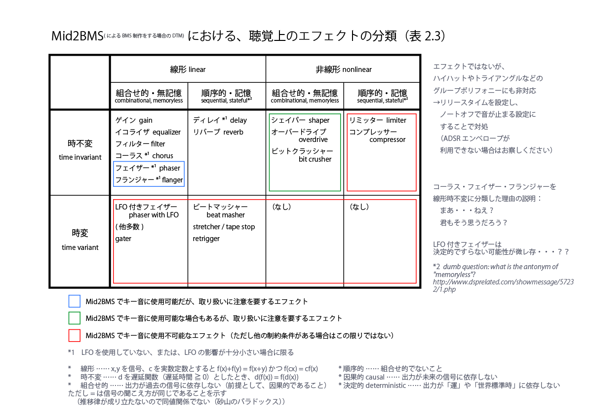

Mid2BMSにおける、聴覚上のエフェクトの分類

注：FL Studio 及び Reaper でこのソフトを使用する場合のサポートは行いません。
和音切りやクオンタイズ機能など、BMHelperと差別化できる機能も増えてきましたので、
2017/10/12を持ちまして、上記の発言を撤回したいと思います。
今後ともMid2BMSを宜しくお願いします。
Last Update: 2017/10/12
Since: 2014/04/01
Copyright (c) 2007-2017 yuinore